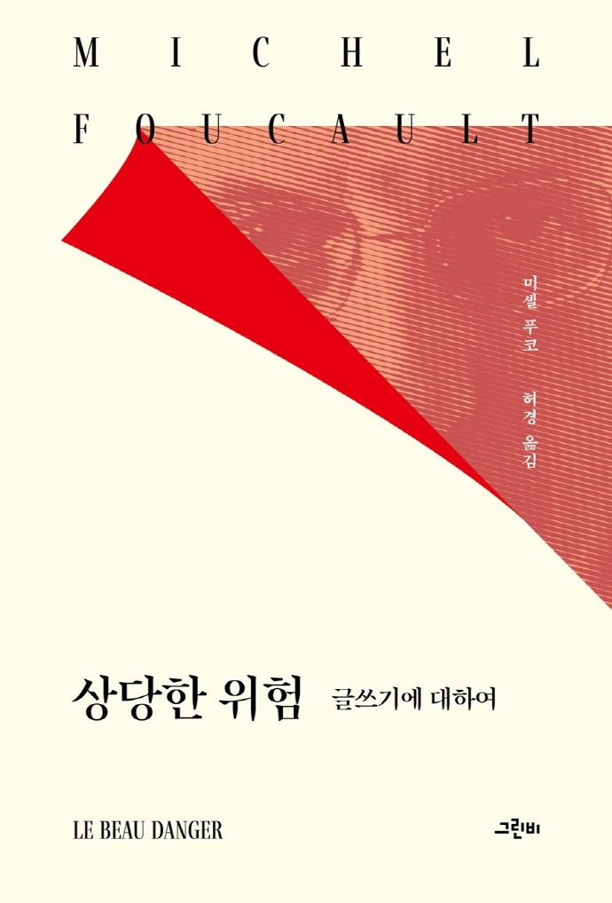

상당한 위험- 글쓰기에 대하여
12쪽
나는 나의 이야기를 이런 말로 시작하고 싶네요.
나는 두려움을 갖고 있습니다.
근본적으로, 나는 내가 왜 불안을 느끼는지,
왜 잘 해내지 못할 봐 걱정을 하는지 잘 모르겠습니다.
돌이켜 생각해 보면, 나는 이것이 다음과 같은 이유들 때문이 아닐까 스스로에게 물어봅니다.
이건 아마 내가 대학에 몸담고 있기 때문에, 말의, 말하자면 규정된,
일련의 형식들을 사용하기 때문이 아닐까?
29쪽
사람들은 나의 글쓰기 안에 자신들에게 사형선고를 내리는 무엇인가가 있다고 느낍니다.
사실, 나는 그보다는 훨씬 더 순진한 편입니다.
나는 사람들에게 사형선고를 내리지 않습니다.
나는 다만 사람들이 이미 죽어 있다고 가정할 뿐입니다.
이것이 바로 사람들이 내게 소리칠 때 그렇게 놀라게 되는 이유입니다.